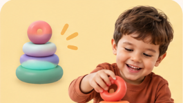
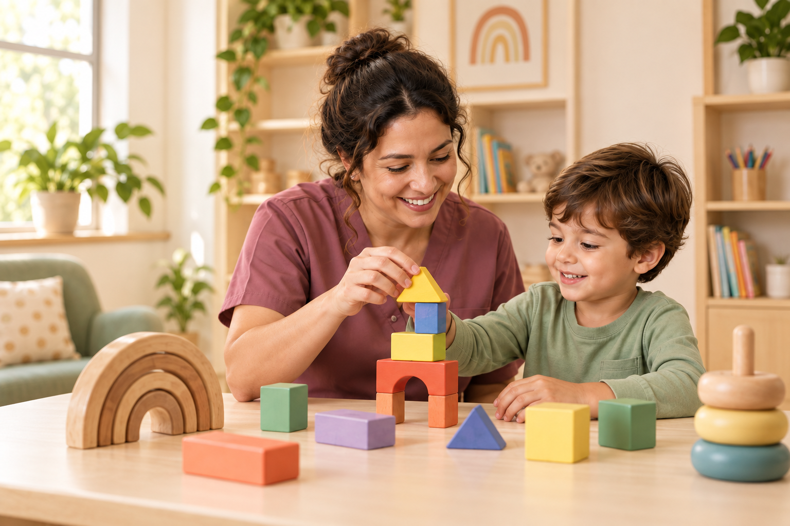
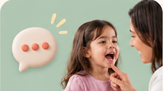
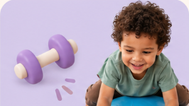
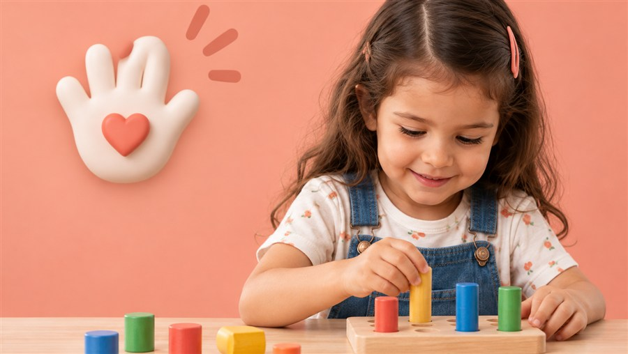
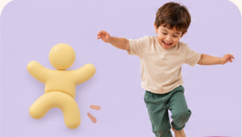
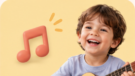
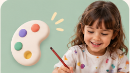

Cada criança,
um universo
de possibilidades.
Cuidado, escuta e desenvolvimento em cada etapa.
infâncias mais possíveis
amanhãs mais gentis

CUIDADO EM PARCERIA
Um caminho construído com a família.
Escutamos cada história, compreendemos as necessidades e planejamos os próximos passos junto com quem conhece a criança de perto.
Diferentes saberes.
Um cuidado integrado.

Fonoaudiologia

Fisioterapia

Terapia ocupacional

Psicomotricidade
Psicopedagogia

Musicoterapia

Arteterapia
Diferentes saberes,
um olhar integrado.
Conheça todas as áreas
Dúvidas
merecem uma
boa conversa.
Algumas perguntas para começar.